| Mata Kuliah | Praktikum Aplikasi Mobile (DIF61145) |
|---|---|
| Modul | Praktikum 7 — List, Grid, Gambar, dan Asset pada ResepKu |
| Materi | List, Grid, Gambar, dan Asset pada ResepKu |
| CPMK | CPMK-45.02 — Mengembangkan, menguji, dan melakukan optimisasi aplikasi mobile interaktif |
| Nama | Putri Balqis Afradinata |
| NIM | 2411531009 |
Praktikum Modul 7 bertujuan mengembangkan aplikasi ResepKu dari Modul 6 dengan menambahkan asset gambar, custom font, foto resep dari internet, serta pilihan tampilan daftar dan grid. Fitur favorit yang sebelumnya menggunakan Provider tetap dipertahankan.
pubspec.yaml, kemudian menggunakannya melalui Image.asset dan ThemeData.Image.network dengan loading state dan error state.ListView.builder dan GridView.builder.setState() tanpa mengganggu state favorit yang dikelola Provider.Asset merupakan berkas pendukung aplikasi, seperti gambar dan font, yang disimpan di dalam project. Asset perlu didaftarkan pada bagian flutter di file pubspec.yaml agar dapat digunakan oleh aplikasi. Pada ResepKu, Image.asset digunakan untuk menampilkan logo dan gambar placeholder. Font Poppins didaftarkan sebagai custom font dan diterapkan melalui properti fontFamily pada ThemeData.
Image.network digunakan untuk menampilkan gambar yang sumbernya berasal dari URL internet. Karena gambar perlu diunduh, prosesnya dapat membutuhkan waktu atau gagal ketika koneksi terputus. Oleh sebab itu, digunakan loadingBuilder untuk menampilkan tampilan sementara saat gambar dimuat dan errorBuilder untuk menampilkan placeholder ketika gambar gagal ditampilkan.
ListView.builder menampilkan item dalam satu kolom secara vertikal, sedangkan GridView.builder menampilkan item dalam susunan baris dan kolom. Keduanya membuat item secara lazy, yaitu item dibangun ketika dibutuhkan. Pada GridView, pengaturan jumlah kolom, jarak, dan rasio kartu dilakukan melalui gridDelegate.
State lokal digunakan untuk data yang hanya dibutuhkan oleh satu bagian aplikasi. Pada modul ini, _isGrid menggunakan setState() karena hanya HomePage yang memerlukan status tampilan. Sementara itu, status favorit tetap dikelola oleh FavoriteProvider agar dapat digunakan bersama oleh RecipeTile, RecipeGridCard, badge, dan halaman lain.
logo.png dan placeholder.png.cdn.dummyjson.com.Pada direktori utama project ResepKu dibuat folder assets dengan dua subfolder, yaitu images dan fonts. File logo dan placeholder ditempatkan di folder images, sedangkan tiga file font Poppins ditempatkan di folder fonts.
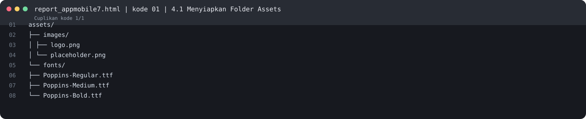
Folder gambar dan font didaftarkan pada bagian flutter di file pubspec.yaml. Poppins didaftarkan dengan tiga variasi ketebalan, yaitu normal, 500, dan 700.
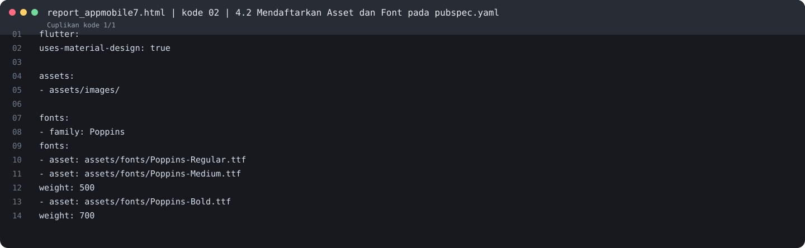
Setelah file disimpan, dependency diperbarui menggunakan perintah berikut apabila VS Code tidak menjalankan flutter pub get secara otomatis.
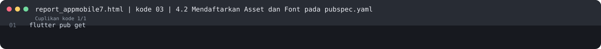
Properti fontFamily: 'Poppins' ditambahkan pada theme dan darkTheme di MaterialApp. Pengaturan themeMode dan builder untuk footer identitas dari Modul 6 tetap dipertahankan.
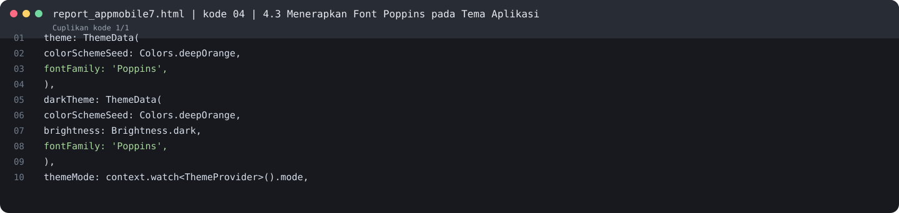
Judul AppBar pada HomePage diubah menjadi Row yang berisi logo ResepKu dan teks nama aplikasi. Logo ditampilkan menggunakan Image.asset.
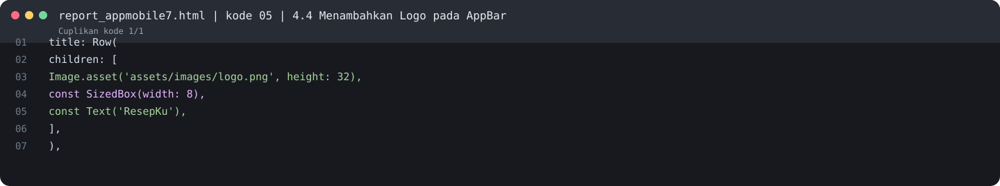
Tampilan Home dengan logo pada AppBar dan seluruh teks menggunakan font Poppins. Footer NIM dan nama harus terlihat.
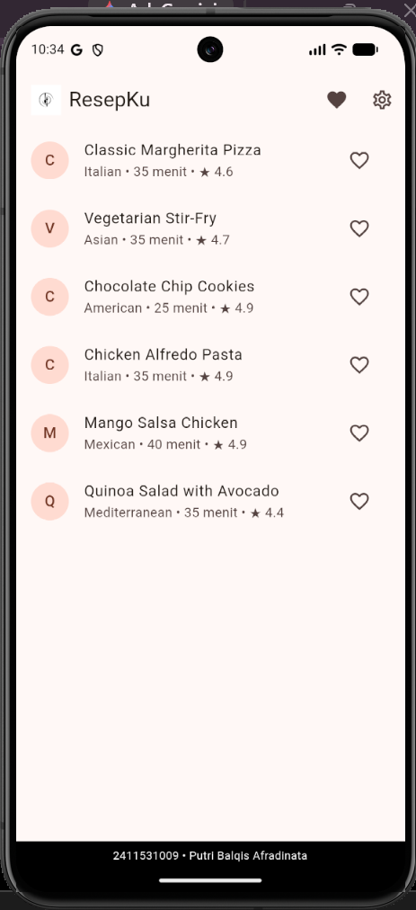
Gambar 1. Muncul logo pada AppBar.
Widget RecipeImage dibuat agar logika penampilan foto dapat digunakan kembali pada tampilan list, grid, dan detail. Widget ini menggunakan Image.network, loadingBuilder, errorBuilder, serta parameter opsional cacheWidth.
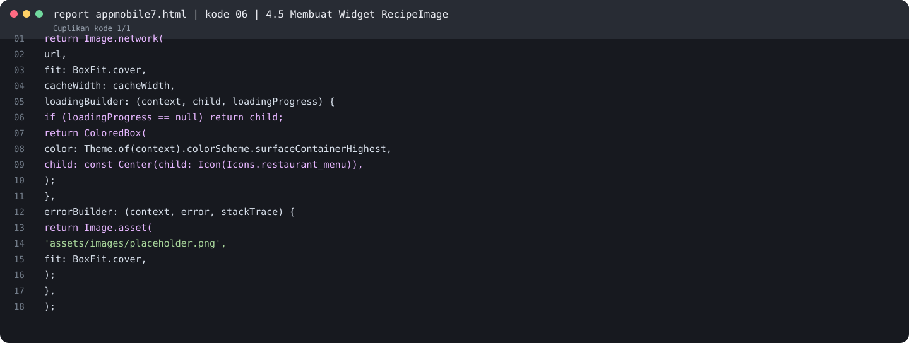
Ketika gambar masih diunduh, aplikasi menampilkan tampilan loading. Jika gambar berhasil dimuat, gambar asli ditampilkan. Jika URL salah atau koneksi tidak tersedia, aplikasi menampilkan gambar placeholder.
Bagian leading pada RecipeTile yang sebelumnya menggunakan CircleAvatar diganti dengan gambar berukuran 56 × 56 dp. Gambar dibungkus dengan ClipRRect agar sudutnya membulat dan menggunakan cacheWidth: 168 untuk mengurangi ukuran gambar saat proses decode.
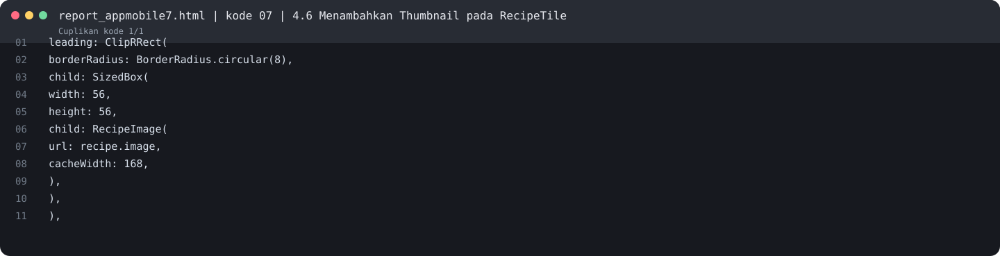
Daftar resep pada HomePage ditampilkan menggunakan ListView.builder. Jumlah item diambil dari dummyRecipes.length, sedangkan setiap item menampilkan RecipeTile berdasarkan index. Tombol Favorit dan Pengaturan tetap dipertahankan.
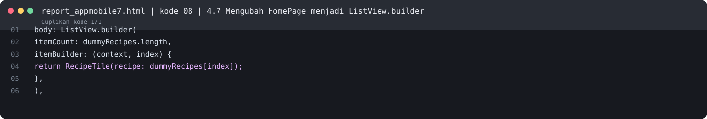
Pengujian dilakukan dengan mengaktifkan mode pesawat pada emulator atau HP, kemudian menutup dan membuka kembali aplikasi. Alternatif lainnya adalah mengubah sementara URL foto menjadi URL yang salah, lalu melakukan hot restart. Setelah pengujian selesai, koneksi atau URL dikembalikan seperti semula.
Dua kondisi yang perlu ditampilkan: Home dengan thumbnail foto resep dan Home ketika error state aktif sehingga placeholder terliha.
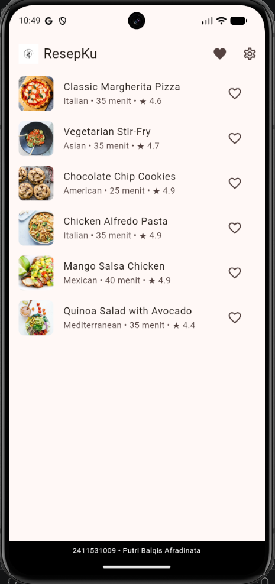
Gambar 1. Gambar resep muncul.
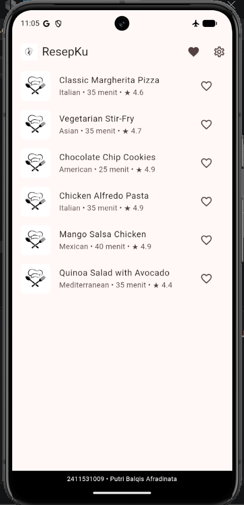
Gambar 2. Placeholder muncul.
Widget RecipeGridCard dibuat untuk menampilkan resep dalam bentuk kartu grid. Card menggunakan InkWell agar seluruh kartu dapat ditekan untuk membuka halaman detail. Foto ditampilkan menggunakan RecipeImage, sedangkan tombol favorit diletakkan di atas foto menggunakan Stack dan Positioned.
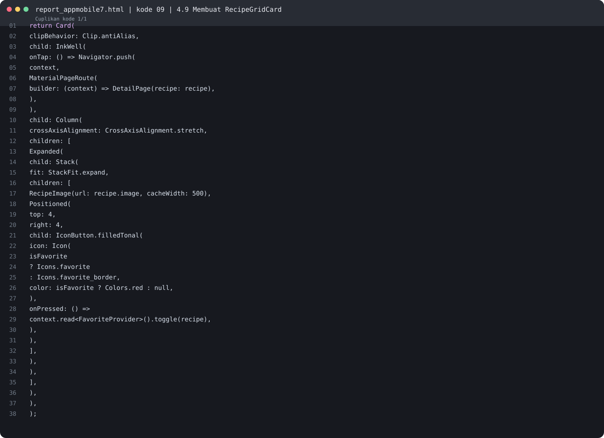
HomePage diubah menjadi StatefulWidget karena membutuhkan state lokal _isGrid untuk menentukan tampilan yang aktif. Nilai awal false berarti aplikasi pertama kali menampilkan list. Tombol pada AppBar mengubah nilai tersebut menggunakan setState().
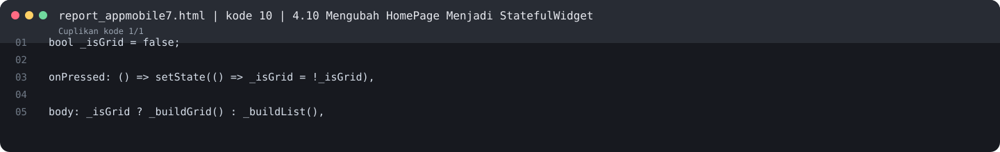
Method _buildList() menggunakan ListView.builder, sedangkan _buildGrid() menggunakan GridView.builder. Grid diatur menjadi dua kolom dengan jarak horizontal dan vertikal 8 dp serta rasio lebar dan tinggi kartu 3 : 4.
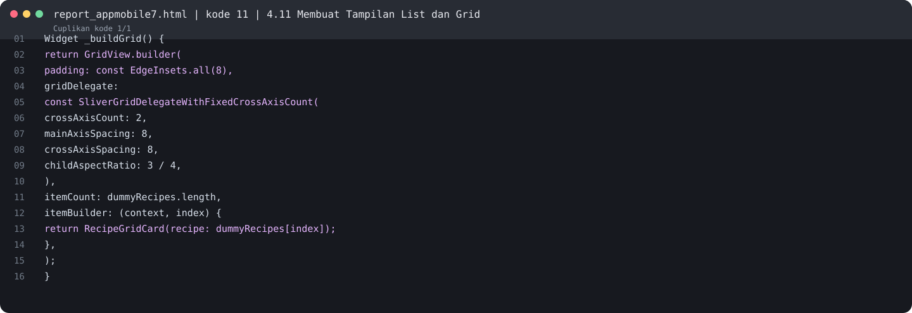
Diketahui lebar layar HP adalah 360 dp. Grid menggunakan padding kiri dan kanan masing-masing 8 dp, jarak antar kolom 8 dp, dan jumlah kolom sebanyak dua.
| Komponen | Perhitungan | Hasil |
|---|---|---|
| Lebar layar | Diketahui | 360 dp |
| Lebar area grid | 360 − (2 × 8) − 8 | 336 dp |
| Lebar setiap kartu | 336 ÷ 2 | 168 dp |
| Tinggi setiap kartu | 168 ÷ (3/4) | 224 dp |
Dengan demikian, lebar setiap kartu adalah 168 dp dan tingginya 224 dp. Perhitungan menggunakan rasio childAspectRatio: 3 / 4, yaitu perbandingan lebar terhadap tinggi kartu.
Widget RecipeImage digunakan kembali pada halaman detail. Foto diletakkan sebagai child pertama ListView dengan rasio 16 : 9 dan sudut membulat. Pada bagian ini cacheWidth tidak diisi karena foto ditampilkan hampir selebar layar.
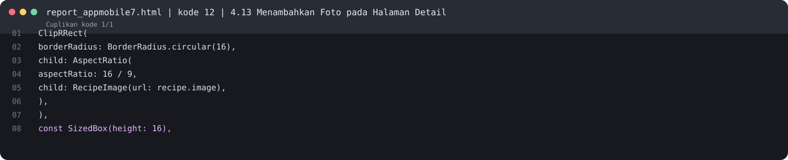
Pengujian dilakukan untuk memastikan fitur Modul 6 dan Modul 7 dapat berjalan bersama. Hasil pengujian dicatat berdasarkan enam skenario pada modul.
| No. | Skenario | Hasil yang Diharapkan | Hasil Pengujian |
|---|---|---|---|
| 1 | Membuka aplikasi | Logo di AppBar, font Poppins, dan thumbnail foto tampil pada setiap resep. | Ada |
| 2 | Menekan tombol grid di AppBar | Resep tampil sebagai kartu dua kolom dan ikon tombol berubah menjadi ikon list. | Ada |
| 3 | Menekan ikon hati pada Margherita di mode grid | Ikon hati berubah merah dan badge favorit bertambah. | Ada |
| 4 | Kembali ke mode list | Ikon hati Margherita tetap merah. | Ada |
| 5 | Menekan kartu Alfredo di mode grid | Halaman detail terbuka dan menampilkan foto besar di bagian atas. | Ada |
| 6 | Mengaktifkan mode pesawat, lalu membuka kembali aplikasi | Gambar placeholder tampil tanpa error merah. | Ada |
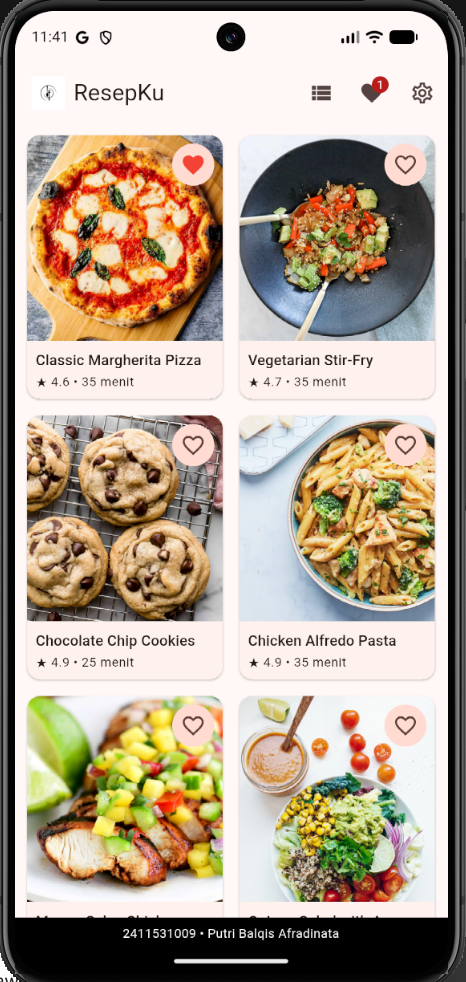
Gambar 1. Halaman home mode grid dan minimal 1 menu favorit.
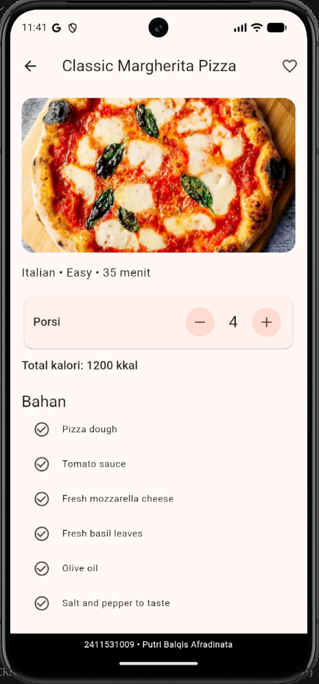
Gambar 2. Halaman detail dengan foto menu.
Latihan pertama menambahkan deretan ChoiceChip di bawah AppBar Home. Chip terdiri dari pilihan “Semua” dan seluruh cuisine yang tersedia pada data resep. Daftar cuisine diambil secara dinamis dari data menggunakan map() dan toSet(), bukan ditulis satu per satu secara manual.
State String? _cuisine ditambahkan pada _HomePageState. Nilai null berarti semua resep ditampilkan. Ketika salah satu chip dipilih, nilai state diperbarui dan data resep difilter berdasarkan cuisine tersebut. Hasil filter digunakan bersama oleh tampilan list maupun grid.
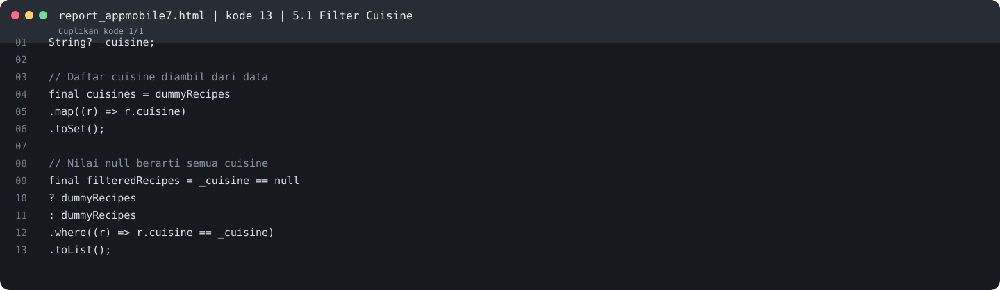
Body HomePage disusun menggunakan Column. ChoiceChip ditempatkan pada ListView horizontal di dalam SizedBox dengan tinggi 56 dp, sedangkan area list atau grid ditempatkan di dalam Expanded agar mengisi sisa ruang.
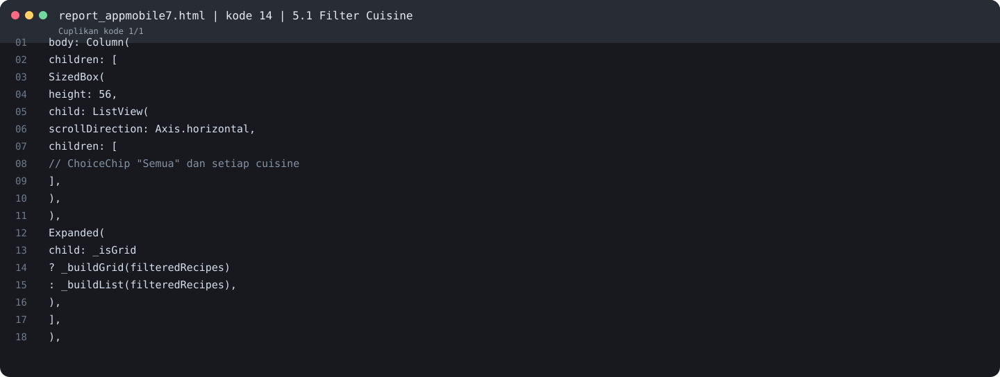
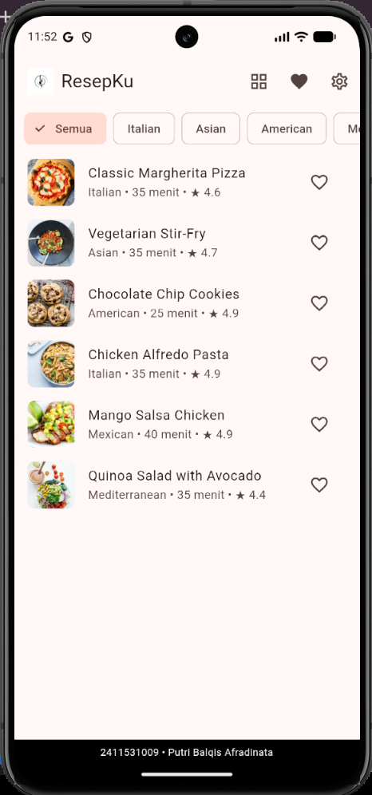
Gambar 1. Filter pada mode list.
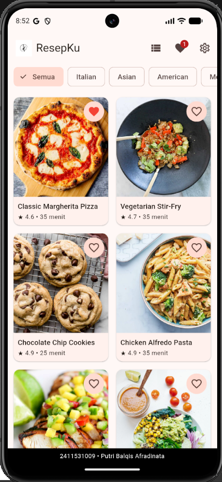
Gambar 2. Filter pada mode grid.
Latihan kedua memperbarui halaman Favorit agar daftar resep lebih rapi. Daftar ditampilkan menggunakan ListView.separated sehingga setiap item memiliki Divider sebagai pemisah. Setiap baris juga menampilkan thumbnail foto menggunakan widget RecipeImage.
Setiap item dibungkus dengan Dismissible agar pengguna dapat menggeser item ke kiri untuk menghapus resep dari daftar favorit. Dismissible menggunakan key unik dan stabil, yaitu ValueKey(recipe.id), bukan index. Setelah item dihapus, aplikasi menampilkan SnackBar yang berisi nama resep yang dihapus. Tombol hapus semua dari Latihan 2 Modul 6 tetap dipertahankan.
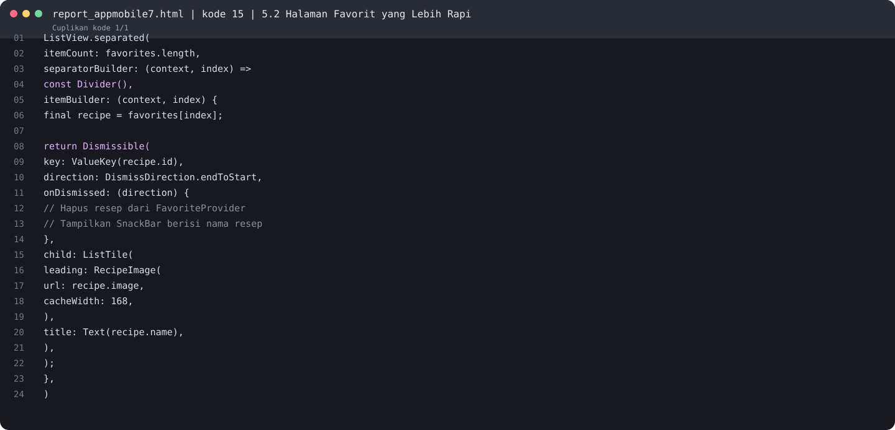
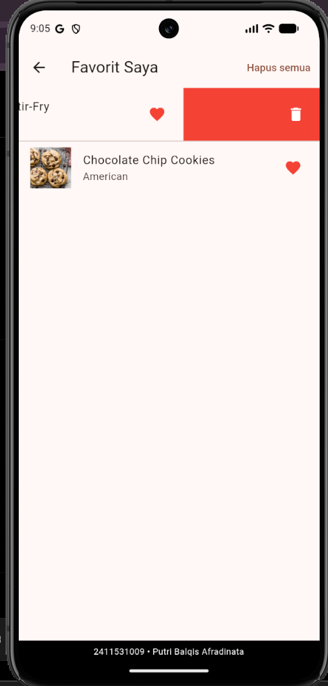
Gambar 1. Dismissable.
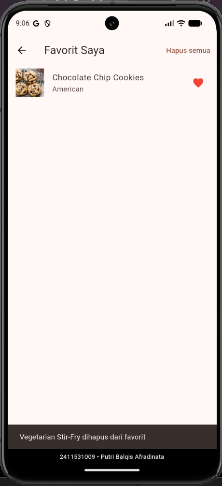
Gambar 2. Foto thumbnail dan bar notifikasi.
Status favorit tetap sama karena data favorit tidak disimpan di dalam RecipeGridCard atau RecipeTile, melainkan dikelola secara terpusat oleh FavoriteProvider menggunakan Provider. Kedua widget membaca sumber state yang sama melalui Provider. Jadi, ketika tombol favorit ditekan pada mode grid, perubahan disimpan pada FavoriteProvider dan ketika kembali ke mode list, RecipeTile membaca data favorit terbaru tersebut. Hal ini menunjukkan bahwa state global dapat digunakan bersama oleh beberapa widget.
if (loadingProgress == null) return child; dihapus?Jika baris tersebut dihapus, kondisi ketika proses unduhan selesai tidak lagi langsung mengembalikan widget gambar yang sudah berhasil dimuat. Akibatnya, loading widget dapat tetap ditampilkan atau alur tampilan gambar tidak ditangani dengan benar. Pemeriksaan loadingProgress == null diperlukan untuk mengetahui bahwa proses pemuatan telah selesai sehingga gambar asli dapat ditampilkan.
Tanpa cacheWidth, gambar didecode mengikuti ukuran sumber, yaitu 1200 × 800 pixel atau 960.000 pixel. Dengan cacheWidth: 168, lebar hasil decode menjadi 168 pixel. Dengan mempertahankan rasio gambar 1200 : 800, tinggi perkiraannya adalah 112 pixel, sehingga jumlahnya sekitar 18.816 pixel. Artinya, jumlah pixel hasil decode menjadi jauh lebih kecil. Jika terdapat 50 resep, penggunaan cacheWidth membantu mengurangi kebutuhan memory dibandingkan jika seluruh gambar didecode pada ukuran aslinya.
Logo merupakan bagian tetap dari identitas aplikasi sehingga lebih tepat disimpan sebagai asset lokal. Dengan begitu, logo dapat langsung ditampilkan tanpa bergantung pada koneksi internet. Sebaliknya, foto resep berasal dari data resep dan jumlahnya dapat bertambah, sehingga lebih fleksibel jika diambil dari internet menggunakan Image.network. Jika semua foto resep dimasukkan ke asset, ukuran aplikasi dapat menjadi lebih besar.
Berdasarkan praktikum Modul 7, aplikasi ResepKu dikembangkan dengan menambahkan asset gambar dan custom font Poppins, menampilkan foto resep dari internet dengan loading state dan error state, serta menyediakan tampilan list dan grid. Penggunaan ListView.builder dan GridView.builder membuat daftar resep ditampilkan secara lebih fleksibel. State tampilan list atau grid dikelola secara lokal menggunakan setState(), sedangkan data favorit tetap dikelola oleh Provider agar dapat digunakan oleh beberapa widget. Melalui latihan, fitur aplikasi juga dikembangkan dengan filter cuisine dan halaman Favorit yang mendukung thumbnail serta penghapusan menggunakan Dismissible.
Dengan demikian, materi Modul 7 memberikan pemahaman tentang penggunaan asset, gambar dari internet, list, grid, serta pengelolaan state pada aplikasi Flutter melalui pengembangan project ResepKu.